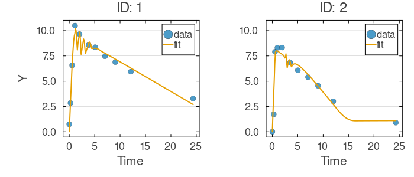
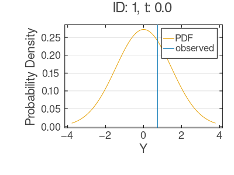

Mixed-Effects Tutorial 3: Neural Differential-Equation Components (SAEM)
In many scientific domains – from systems biology to chemical engineering to ecology – we understand the broad structure of a dynamical system (e.g., compartments connected by transfer rates) but lack precise knowledge of every rate law or interaction term. Neural ordinary differential equations (Neural ODEs) offer a principled way to address this gap: they embed small neural networks directly inside an ODE system, allowing the data to shape the functional forms that mechanistic reasoning alone cannot specify. Crucially, this approach preserves the interpretable compartmental structure while letting learned components capture the unknown nonlinearities.
In this tutorial, you will build a mixed-effects ODE model in which multiple neural-network components parameterize the ODE right-hand side, and fit it with the Stochastic Approximation Expectation-Maximization (SAEM) algorithm. By the end, you will have a working example of a hybrid mechanistic-neural model that accounts for between-subject variability through random effects on the network weights themselves.
Learning Goals
By the end of this tutorial, you will be able to:
- Declare neural-network parameter blocks (
NNParameters) and wire them into an ODE system using the@DifferentialEquationmacro. - Couple network weights to subject-level random effects via multivariate normal distributions, so that every individual in the dataset receives a personalized version of the dynamics.
- Fit the model using SAEM with its default settings, which remain stable even when random-effect dimensions are high.
- Visualize and diagnose the fitted trajectories and observation distributions.
Step 1: Data Setup
In this step, you will load and prepare the data. We use the classic Theophylline dataset, which records concentration-time profiles for 12 subjects after oral administration. Although this dataset originates from pharmacology, the underlying dynamics – a substance entering a depot compartment and transferring to a central compartment where it is observed and cleared – are a standard example of a two-compartment transfer system that arises across many fields, from tracer kinetics to nutrient cycling. You will reshape the data into a flat format where the initial amount d enters as a constant covariate.
using NoLimits
using CSV
using DataFrames
using Distributions
using Downloads
using Random
using LinearAlgebra
using OrdinaryDiffEq
using SciMLBase
using Lux
using Turing
include(joinpath(@__DIR__, "_data_loaders.jl"))
Random.seed!(321)
theoph_df = load_theoph()
function build_theoph_non_event_df(tbl::DataFrame)
df = DataFrame(
ID=Int.(tbl.Subject),
t=Float64.(tbl.Time),
y=Float64.(tbl.conc),
d=Float64.(tbl.Wt .* tbl.Dose),
)
sort!(df, [:ID, :t])
return df
end
df = build_theoph_non_event_df(theoph_df)
first(df, 10)<!– injected:t3-dfhead –>
10×4 DataFrame
Row │ ID t y d
│ Int64 Float64 Float64 Float64
─────┼──────────────────────────────────
1 │ 1 0.0 0.74 319.992
2 │ 1 0.25 2.84 319.992
3 │ 1 0.57 6.57 319.992
4 │ 1 1.12 10.5 319.992
5 │ 1 2.02 9.66 319.992
6 │ 1 3.82 8.58 319.992
7 │ 1 5.1 8.36 319.992
8 │ 1 7.03 7.47 319.992
9 │ 1 9.05 6.89 319.992
10 │ 1 12.12 5.94 319.992Step 2: Define the Neural ODE Mixed-Effects Model
In this step, you will define the core model. The key idea is that instead of specifying closed-form rate functions (such as first-order kinetics), you let neural networks learn these functions directly from data. Each NNParameters block declares a small feedforward network whose flattened weights become part of the fixed-effects parameter vector. At evaluation time, a callable function (e.g., NNA1) reconstructs the network from its weight vector and evaluates it – so you can use it inside @DifferentialEquation just like any other function.
The ODE right-hand side uses four neural components arranged in a two-compartment transfer system:
fA1(t)andfA2(t)govern the dynamics of the depot (input) compartment.fC1(t)andfC2(t)govern the dynamics of the central (observed) compartment.
To capture between-subject variability, each network's weight vector is paired with a subject-level random-effect vector (etaA1, etaA2, etaC1, etaC2) drawn from a MvNormal distribution centered on the population weights. This means every individual effectively receives their own personalized network: the population learns shared structure, while the random effects allow individual departures.
using NoLimits
using Distributions
using LinearAlgebra
using OrdinaryDiffEq
using Lux
width_nn = 2
chain_A1 = Lux.Chain(Lux.Dense(1, width_nn, tanh), Lux.Dense(width_nn, 1))
chain_A2 = Lux.Chain(Lux.Dense(1, width_nn, tanh), Lux.Dense(width_nn, 1))
chain_C1 = Lux.Chain(Lux.Dense(1, width_nn, tanh), Lux.Dense(width_nn, 1))
chain_C2 = Lux.Chain(Lux.Dense(1, width_nn, tanh), Lux.Dense(width_nn, 1))
model_raw = @Model begin
@helpers begin
softplus(u) = u > 20 ? u : log1p(exp(u))
end
@covariates begin
t = Covariate()
d = ConstantCovariate(constant_on=:ID)
end
@fixedEffects begin
sigma = RealNumber(1.0, scale=:log, prior=LogNormal(log(1.0), 0.5), calculate_se=true)
zA1 = NNParameters(chain_A1; function_name=:NNA1, calculate_se=false)
zA2 = NNParameters(chain_A2; function_name=:NNA2, calculate_se=false)
zC1 = NNParameters(chain_C1; function_name=:NNC1, calculate_se=false)
zC2 = NNParameters(chain_C2; function_name=:NNC2, calculate_se=false)
end
@randomEffects begin
etaA1 = RandomEffect(MvNormal(zA1, Diagonal(ones(length(zA1)))); column=:ID)
etaA2 = RandomEffect(MvNormal(zA2, Diagonal(ones(length(zA2)))); column=:ID)
etaC1 = RandomEffect(MvNormal(zC1, Diagonal(ones(length(zC1)))); column=:ID)
etaC2 = RandomEffect(MvNormal(zC2, Diagonal(ones(length(zC2)))); column=:ID)
end
@DifferentialEquation begin
a_A(t) = softplus(depot)
x_C(t) = softplus(center)
fA1(t) = softplus(NNA1([t / 24], etaA1)[1])
fA2(t) = softplus(NNA2([a_A(t)], etaA2)[1])
fC1(t) = -softplus(NNC1([x_C(t)], etaC1)[1])
fC2(t) = softplus(NNC2([t / 24], etaC2)[1])
D(depot) ~ -d * fA1(t) - fA2(t)
D(center) ~ d * fA1(t) + fA2(t) + fC1(t) + d * fC2(t)
end
@initialDE begin
depot = d
center = 0.0
end
@formulas begin
y ~ Normal(center(t), sigma)
end
end
model = set_solver_config(
model_raw;
saveat_mode=:saveat,
alg=AutoTsit5(Rosenbrock23()),
kwargs=(abstol=1e-2, reltol=1e-2),
)Before moving on, inspect the model structure to verify that all blocks were assembled correctly.
Model Summary
model_summary = NoLimits.summarize(model)
model_summary<!– injected:t3-model –>
ModelSummary
════════════════════════════════════════════════════════════════════════════════════════════════
Overview
model type : ODE
fixed-effect blocks : 5
fixed-effect scalar values : 29
random effects : 4
random-effect grouping columns : 1
covariates (declared) : 2
formulas (deterministic / outcomes) : 0 / 1
requires DE accessors : true
Structure blocks
helpers : true
fixed effects : true
random effects : true
covariates : true
preDE : false
DifferentialEquation : true
initialDE : true
Covariate classes
varying : 1
constant : 1
dynamic : 0
Fixed-effects declarations
name type size se prior scale bounds details
---------------------------------------------------------------------------------------------------------
sigma RealNumber 1 yes LogNormal log finite lower 1/1, finite upper 0/1 -
zA1 NNParameters 7 no Priorless n/a finite lower 0/7, finite upper 0/7 function=NNA1, weights=7
zA2 NNParameters 7 no Priorless n/a finite lower 0/7, finite upper 0/7 function=NNA2, weights=7
zC1 NNParameters 7 no Priorless n/a finite lower 0/7, finite upper 0/7 function=NNC1, weights=7
zC2 NNParameters 7 no Priorless n/a finite lower 0/7, finite upper 0/7 function=NNC2, weights=7
Random-effects declarations
name group dist
------------------------
etaA1 ID MvNormal
etaA2 ID MvNormal
etaC1 ID MvNormal
etaC2 ID MvNormal
Covariate declarations
name kind columns constant_on interpolation
-----------------------------------------------------------------------------------------------
t Covariate t - -
d ConstantCovariate d ID -
Formulas
deterministic names : (none)
outcome names : y
required DE states : center
required DE signals : (none)
declared DE states : depot, center
declared DE signals : a_A, x_C, fA1, fA2, fC1, fC2
Outcome distribution types
y => Normal
Helper functions
names : softplusStep 3: Build the DataModel and Configure SAEM
In this step, you will pair the model with the data by constructing a DataModel, then configure the SAEM algorithm. SAEM alternates between sampling random effects conditional on the current parameter estimates (the E-step) and updating population parameters (the M-step). Here we use the default configuration, NoLimits.SAEM(). With its defaults, SAEM draws random effects with the adaptive Metropolis sampler (SaemixMH) in the E-step and updates the population parameters with a stochastic-approximation (Robbins-Monro) M-step. No special configuration is required even though the random-effect dimension is high here, with four separate network weight vectors per subject. Running with defaults keeps the example simple and demonstrates that the out-of-the-box configuration is sufficient for this hybrid neural-ODE model.
dm = DataModel(model, df; primary_id=:ID, time_col=:t)
saem_method = NoLimits.SAEM()
serialization = SciMLBase.EnsembleThreads()Before fitting, review the data model summary to confirm that individuals, covariates, and grouping structures were parsed as expected.
DataModel Summary
dm_summary = NoLimits.summarize(dm)
dm_summary<!– injected:t3-dm –>
DataModelSummary
════════════════════════════════════════════════════════════════════════════════════════════════
Overview
model type : ODE
event-aware : false
individuals : 12
rows (total / obs / event) : 132 / 132 / 0
fixed effects (top-level) : 5
outcomes : 1
covariates (declared) : 2
random effects : 4
Covariate classes
varying : 1
constant : 1
dynamic : 0
Outcome distribution types
y => Normal
Random-effect distribution types
etaA1 => MvNormal
etaA2 => MvNormal
etaC1 => MvNormal
etaC2 => MvNormal
Individual design diagnostics
individuals with one observation : 0
global observed time range : 0.0 to 24.65
unique observed time points : 78
duplicate (ID, time) observation rows : 0
monotonic-time violations (observation order) : 0
Observations per individual
metric n mean sd min q25 median q75 max
----------------------------------------------------------------------------------------------------------------
count 12 11.0 0.0 11.0 11.0 11.0 11.0 11.0
Time span per individual
metric n mean sd min q25 median q75 max
----------------------------------------------------------------------------------------------------------------
span 12 24.1992 0.2439 23.7 24.11 24.195 24.355 24.65
Median sampling interval per individual
metric n mean sd min q25 median q75 max
-------------------------------------------------------------------------------------------------------------------
median_dt 12 1.5092 0.0277 1.445 1.4975 1.5075 1.5312 1.55
Outcome descriptive statistics (observation rows)
Variable n mean sd min q25 median q75 max
------------------------------------------------------------------------------------------------------------------
y 132 4.9605 2.8564 0.0 2.8775 5.275 7.14 11.4
Declared covariates
name kind columns
---------------------------------------------
t Covariate t
d ConstantCovariate d
Covariate descriptive statistics (observation rows)
Variable n mean sd min q25 median q75 max
------------------------------------------------------------------------------------------------------------------
t.t 132 5.8946 6.8997 0.0 0.595 3.53 9.0 24.65
d.d 132 315.4398 14.3601 267.84 319.365 319.84 319.994 320.65
Per-random-effect summary
random effect group dist levels rows/level min median max
----------------------------------------------------------------------------------
etaA1 ID MvNormal 12 11.0 11.0 11.0
etaA2 ID MvNormal 12 11.0 11.0 11.0
etaC1 ID MvNormal 12 11.0 11.0 11.0
etaC2 ID MvNormal 12 11.0 11.0 11.0Step 4: Fit the Model and Inspect Results
You are now ready to run SAEM. With the default settings the algorithm iterates up to 300 times, drawing the random effects with the adaptive Metropolis sampler within each E-step. After fitting, you will extract the final objective value and the number of estimated parameters as an initial sanity check.
res_saem = fit_model(
dm,
saem_method;
serialization=serialization,
rng=Random.Xoshiro(21),
)
(
objective=NoLimits.get_objective(res_saem),
n_params=length(NoLimits.get_params(res_saem; scale=:untransformed)),
)<!– injected:t3-obj –>
(objective = -566.59931513905, n_params = 29)For a more detailed summary of the fit – including parameter estimates and convergence diagnostics – call the summarize function.
fit_summary_saem = NoLimits.summarize(res_saem)
fit_summary_saem<!– injected:t3-fit –>
FitResultSummary
════════════════════════════════════════════════════════════════════════════════════════════════
Overview
method : saem
inference : frequentist
scale : natural
objective : -566.5993
iterations : 300
parameters shown (reported / total) : 1 / 29
Parameter estimates
parameter Estimate
-----------------------
sigma 1.4655
Outcome data coverage
outcome n_obs n_missing
-------------------------------
y 132 0
TOTAL 132 0
Empirical Bayes random effects summary (across RE levels)
random effect component n mean sd q25 median q75
--------------------------------------------------------------------------------------------------
etaA1 etaA1_1 12 7.0109 0.0249 6.9941 7.0063 7.027
etaA1 etaA1_2 12 -3.9893 0.0069 -3.9918 -3.9899 -3.988
etaA1 etaA1_3 12 -1.4607 0.0601 -1.4942 -1.4596 -1.4369
etaA1 etaA1_4 12 0.9254 0.0662 0.8756 0.921 0.9753
etaA1 etaA1_5 12 -2.8715 0.1696 -3.0285 -2.886 -2.7435
etaA1 etaA1_6 12 0.9148 0.1492 0.7938 0.8918 1.0396
etaA1 etaA1_7 12 -6.8905 0.1671 -7.0129 -6.8715 -6.779
etaA2 etaA2_1 12 -2.4305 0.0018 -2.4301 -2.4301 -2.4301
etaA2 etaA2_2 12 -1.7398 0.0009948 -1.7398 -1.7398 -1.7398
etaA2 etaA2_3 12 -0.2848 0.0027 -0.2845 -0.2845 -0.2845
etaA2 etaA2_4 12 -0.0919 0.0016 -0.0923 -0.0923 -0.0923
etaA2 etaA2_5 12 3.1304 0.0031 3.1307 3.1316 3.1319
etaA2 etaA2_6 12 -0.3706 0.0041 -0.3722 -0.372 -0.3715
etaA2 etaA2_7 12 -3.2436 0.0104 -3.2407 -3.2405 -3.2401
etaC1 etaC1_1 12 -3.5356 0.0334 -3.5489 -3.5198 -3.51
etaC1 etaC1_2 12 1.7381 0.2918 1.4245 1.7708 1.8963
etaC1 etaC1_3 12 4.8901 0.0193 4.8814 4.8981 4.9041
etaC1 etaC1_4 12 -13.3755 0.0435 -13.4124 -13.3729 -13.3405
etaC1 etaC1_5 12 -5.2313 0.0964 -5.2747 -5.2638 -5.226
etaC1 etaC1_6 12 7.2803 0.0843 7.2261 7.2682 7.3407
etaC1 etaC1_7 12 1.681 0.0791 1.6626 1.6972 1.7178
etaC2 etaC2_1 12 -2.7478 0.0042 -2.748 -2.7478 -2.7477
etaC2 etaC2_2 12 -4.7313 0.0211 -4.7388 -4.7245 -4.7178
etaC2 etaC2_3 12 -1.7794 0.0181 -1.79 -1.7853 -1.7723
etaC2 etaC2_4 12 0.9664 0.1426 0.8394 0.9529 1.082
etaC2 etaC2_5 12 1.7422 0.0939 1.6953 1.7598 1.8059
etaC2 etaC2_6 12 4.1325 0.0798 4.0898 4.1081 4.1628
etaC2 etaC2_7 12 -6.1334 0.101 -6.1993 -6.1513 -6.0833Step 5: Visualize Fitted Trajectories
In this step, you will overlay the model predictions on the raw observations for the first two subjects. Plotting fitted trajectories against observed data provides an immediate visual assessment of model adequacy – you should see the neural ODE tracking the characteristic rise-and-decay pattern of the two-compartment transfer system, with subject-specific variation captured by the random effects.
p_fit_saem = plot_fits(
res_saem;
observable=:y,
individuals_idx=[1, 2],
ncols=2,
shared_x_axis=true,
shared_y_axis=true,
)
p_fit_saem<!– injected:t3-pfit –>

Step 6: Inspect the Observation Distribution
As a final diagnostic, you will examine the implied observation distribution at a single data point for the first individual. This plot shows the full predictive distribution (not just the point estimate), which helps you assess whether the residual variance is well-calibrated and whether the model's uncertainty is reasonable.
p_obs_saem = plot_observation_distributions(
res_saem;
observables=:y,
individuals_idx=1,
obs_rows=1,
)
p_obs_saem<!– injected:t3-pobs –>

Interpretation Notes
- This modeling pattern combines mechanistic compartmental states with learned nonlinear rate functions inside a single mixed-effects ODE. The compartmental structure encodes known domain knowledge (e.g., mass conservation, transfer between compartments), while the neural networks fill in the unknown functional forms. This hybrid strategy is broadly applicable to any system where the topology is known but the governing laws are not fully specified.
- Default SAEM (
NoLimits.SAEM()) is sufficient here: the adaptive Metropolis E-step and stochastic-approximation M-step remain stable even though the random-effect dimension is large, as is typical with neural-network weight vectors. When defaults are not enough, SAEM also exposes closed-form Gaussian block updates throughbuiltin_stats=:closed_formtogether with there_mean_paramsmapping. - The structural settings used here (network width, ODE solver tolerances) are intentionally modest to keep the tutorial fast. For production analyses, consider widening the networks, increasing
maxitersand the number of MCMC samples to ensure thorough convergence, and tightening the ODE solver tolerances.